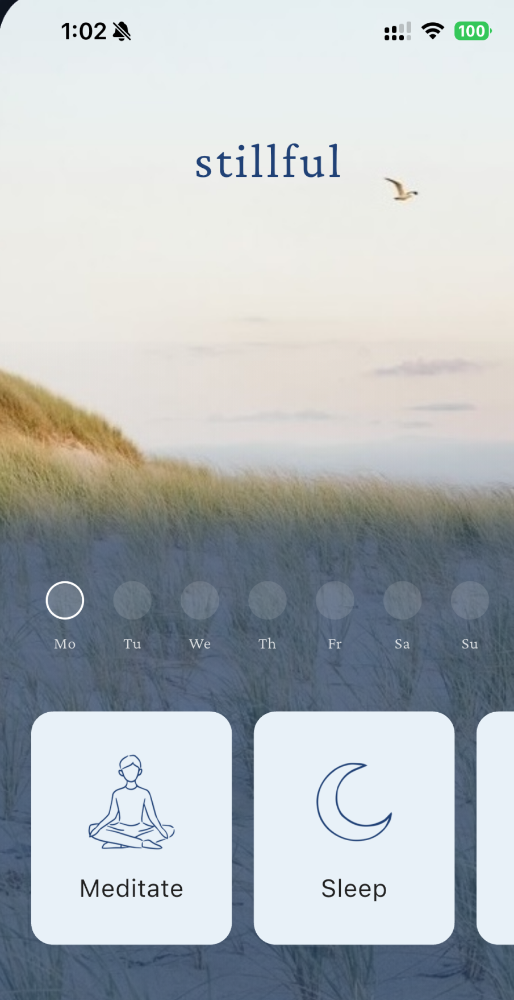

Less scrolling. More stillness.
No endless libraries or ads to distract you. Just simple tools to practice mindfulness.

Start with the breath
Reconnecting with your breath makes it easier for your mind to settle.
Get more for free
- New guided meditations each week
- Mindful stories for sleep
- Breathwork when you want
Everyday life
 the quiet option
the quiet option
 returning
returning
 small moments
small moments
 mindfulness through consistency
mindfulness through consistency